Internal Assessment — the design project
The Internal Assessment (IA) is one design project: you identify, analyse, evaluate and redesign an existing product to meet the needs of a real user, your primary persona, and you build physical fidelity models to test it. It takes about 50 hours, is marked out of 33 against five criteria (A–E), and is worth 40% of the grade at SL and 30% at HL — the task and the criteria are the same at both levels.
This chapter takes you through the project in twelve self-study tasks, one stage at a time. Each task shows what its criterion asks, points you to the exemplar projects and the marks they were given, and ends with a piece of your own project written or planned. The tabs below follow the project in order: start with the Overview, then work through the criteria A to E, and finish with the Final check.
The pages from the exemplar projects shown in this chapter are courtesy of the IBO. The faces and names of the people in them have been blanked out.
Overview
The tasks, in order
| Task | Title | Criterion / strand | You finish with |
|---|---|---|---|
| 1 | The design project, its rules and your product | All — requirements, limits, academic integrity | A 100-word project proposal |
| 2 | The primary persona | A — analyse a primary persona | Research plan and persona profile draft |
| 3 | Task analysis and storyboard | A — storyboard from observation | Task-analysis table and storyboard plan |
| 4 | Analysing existing products | A — analyse existing products | Comparison matrix of four to six products |
| 5 | The problem statement | B — problem statement | Draft problem statement |
| 6 | The design specification | B — design specification | Specification table |
| 7 | Generating feasible redesign ideas | C — present feasible ideas | Three developed ideas |
| 8 | Testing and evaluating ideas | C — evaluate against the specification and user feedback | Evaluation matrix and chosen idea |
| 9 | Iterative fidelity modelling and testing | D — fidelity models and test cycles | Model–test–refine plan and test log |
| 10 | Design drawings for a manufacturer | D — design drawings | First formal drawing |
| 11 | Presenting the solution and comparing it with the original | E — both strands | Comparison table and presentation plan |
| 12 | Final check and self-assessment | All criteria | Limits audit and self-assessed marks |
The marks and the limits
| Criterion | Marks | Approx. A4 pages | Recommended words |
|---|---|---|---|
| A — Empathize | 9 | 9 | 900 |
| B — Defining the project | 6 | 4 | 1,200 |
| C — Ideation and modelling | 6 | 8 | 900 |
| D — Designing a solution | 6 | 10 | 300 |
| E — Presenting a solution | 6 | 4 | 200 |
| Total | 33 | 35 (maximum) | 3,500 (maximum) |
Anything beyond 35 A4 pages or 3,500 words is not read. Annotations of 10 words or fewer do not count towards the words, and sources are referenced as footnotes on the page.
The exemplars
Your teacher shares twelve exemplar projects. Each comes with its marks and the moderator's comments — read the comments, not just the marks: they say why each mark was given.
| Exemplar | A /9 | B /6 | C /6 | D /6 | E /6 | Total /33 |
|---|---|---|---|---|---|---|
| 01 Stand Up Desk | 2 | 3 | 3 | 4 | 2 | 14 |
| 02 Water Carrier | 5 | 4 | 4 | 3 | 2 | 18 |
| 03 Stand Up Desk V2 | 2 | 3 | 3 | 4 | 2 | 14 |
| 04 Bending Bar | 3 | 4 | 4 | 4 | 4 | 19 |
| 05 Easy On Pants | 5 | 4 | 3 | 4 | 5 | 21 |
| 06 Massage Tool | 3 | 3 | 3 | 4 | 4 | 17 |
| 07 Capsule Toy | 3 | 3 | 4 | 6 | 4 | 20 |
| 08 Prosthetics | 8 | 5 | 6 | 6 | 5 | 30 |
| 09 Disability Desk | 4 | 3 | 3 | 3 | 3 | 16 |
| 10 Math Playset | 6 | 3 | 4 | 3 | 2 | 18 |
| 11 Trowel | 5 | 5 | 4 | 6 | 4 | 24 |
| 12 Drone Racing Tool | 4 | 3 | 2 | 3 | 2 | 14 |
All twelve tasks are written for you working alone with the Design technology guide, the exemplars and your own project. Your teacher reads and comments on one complete draft; these tasks are how you get it ready.
Task 1 — The design project, its rules and your product
Learning outcomes
- Describe what the design project asks you to do and how it is assessed.
- State the limits that cost marks: 35 A4 pages, 3,500 words, annotations of 10 words or fewer.
- Explain what academic integrity means for the project, including the single teacher-read draft.
- Choose an existing product, a primary persona and a task that give a project of the right complexity.
1. What the design project is
The internal assessment is one design project: an open-ended task in which you identify, analyse, evaluate and redesign an existing product to meet the needs of an intended user. As part of it you develop a physical fidelity model for testing and evaluation.
You work through the design thinking process: empathize, define, ideate, prototype and test. It is iterative, not a straight line — you are expected to go back and repeat stages as you learn more about your user.
Open the Design technology guide at the Internal assessment section (pages 70–83) and read "Internal assessment details" and "Features of the design project". Note the meaning of these key terms: primary persona, task analysis, redesign, qualitative research, quantitative research, annotations, appendices.
2. The rules that cost marks
- 35 A4 pages and 3,500 words at most. The examiner stops reading at the limit; nothing after it earns marks.
- A4 portrait throughout — the only exception is the detailed dimension drawings in criterion D.
- Annotations of 10 words or fewer. They must be legible (typed, or clear handwriting equivalent to Arial 11 pt, black ink). A longer annotation counts as description and goes into your word count.
- No front cover, contents page or appendices are needed — examiners do not read them. Anything that matters must be in the body of the project.
- Reference every source as a footnote on the page. Footnotes do not count towards the words and no reference list is needed. A missing reference is treated as academic malpractice.
- Your teacher reads one draft. They advise but do not edit, and the next version you hand in is your final submission — so make the draft complete.
- Collaboration is not collusion. Interviewing users and asking for feedback is expected; the writing, the design decisions and the images must be your own.
3. Look at the finished article
- 08 Prosthetics — 30/33, the strongest example. Page through it and note how the 35 pages are shared between criteria A to E.
- 12 Drone Racing Tool — 14/33. Read its commentary: which criteria lost the most marks, and why?
Write down three differences you can see between the two projects.
4. Choose your product, persona and task
The guide warns that a simple problem with an overly complex solution is unlikely to reach the higher bands. Choose a product whose redesign has DP-level complexity, and a solution you can model physically. A good choice has:
- a real, existing product you can get hold of, test and photograph (a digital product may be analysed only when the physical one is not available — and not its UI or UX);
- a real primary persona you can observe, interview and photograph using it — not an imagined character;
- a specific task the persona performs with the product, with difficulties you can see;
- four to six similar products you can test and compare;
- enough parts, materials or mechanisms to give you real design decisions to make.
| Question | Your answer |
|---|---|
| Product I will redesign | |
| Primary persona (who, age, context) | |
| Task they perform with it | |
| Problems I have already noticed | |
| Similar products I can test (4–6) | |
| Model I could build (materials, tools) |
5. Exit task
Write a 100-word project proposal: the product, the primary persona, the task, the problem you have noticed, and why the redesign is worth doing. Keep it — it is the starting point for criteria A and B, and something to show your teacher.
Video support
| Search phrase | Suggested channel | Use it for |
|---|---|---|
| design thinking process explained | IDEO U, Stanford d.school | Section 1 — the five stages |
| what is user centered design | NNgroup | Section 1 — why the user comes first |
| IB design technology internal assessment 2027 | teacher channels — preview first | Section 2 — check anything they say against the guide |
Search these phrases on YouTube rather than following fixed links, which go stale. Where no channel is named, preview a result before relying on it. Where a video and the Design technology guide disagree, the guide wins.
Criterion A — Empathize (9 marks)
About 9 pages and 900 words. Criterion A asks you to understand your user before you design anything, in three strands: analyse a primary persona, present a storyboard from observing them use the product, and analyse existing products. Tasks 2, 3 and 4 take them in that order.
Task 2 — The primary persona
Learning outcomes
- Explain who your primary persona is and why they suit the redesign of the product.
- Plan qualitative and quantitative research into the persona's needs and behaviours.
- Record the persona's characteristics, context, preferences, motivations and requirements.
- Capture images of the persona that show their issues with the existing product.
1. What the criterion asks
Criterion A: Empathize is worth 9 marks (about 9 pages and 900 words). Its first strand asks you to analyse a primary persona appropriate to the redesign of the product.
| Marks | What the work does |
|---|---|
| 1–3 | states a primary persona suited to the redesign |
| 4–6 | describes that persona |
| 7–9 | explains that persona — why each characteristic matters for the redesign |
Required evidence: a range of digital images of the primary persona showing their issues with an existing product, and an explanation of the persona's characteristics, context, preferences, motivations and requirements — in about two A4 pages.
Watch the command terms: states → describes → explains. To reach 7–9 you must say why each characteristic matters for this product, not just list it.
2. Learn from the exemplars
08 Prosthetics (A 8/9) — what research evidence supports each claim about the user? Two personas, each with clear goals, frustrations and needs; interviews behind every need; real photographs showing the difficulty; and further research with a secondary persona and with specialists.

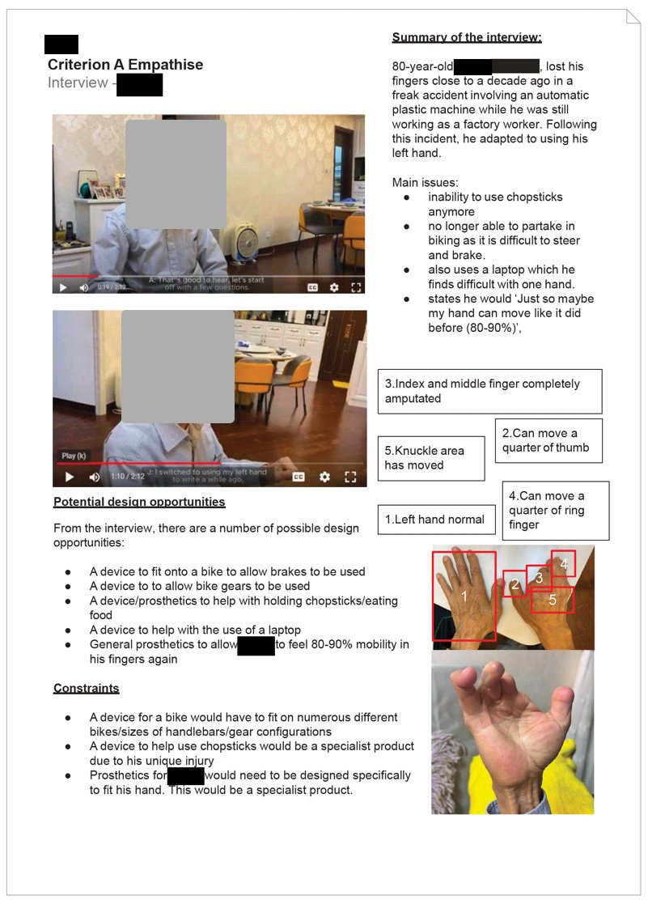

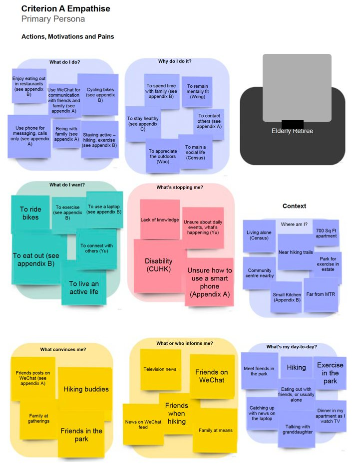

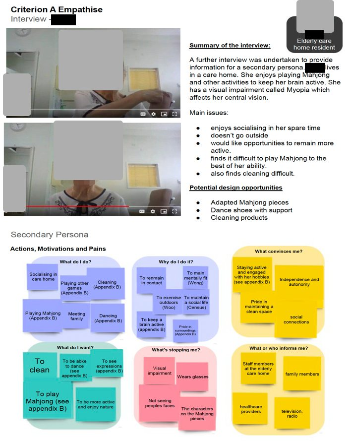
This student used more pages than the guide suggests for the persona. That is acceptable as long as the whole project stays within its page count and word limit.
10 Math Playset (A 6/9) — how are photographs of the real user used? A full profile — background, skills, motivation, goals and frustrations — built around the real users.

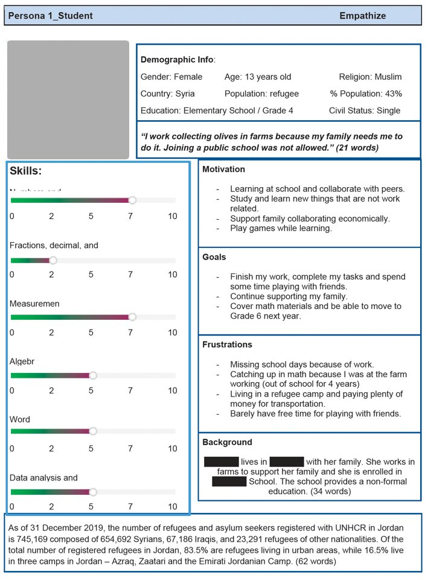

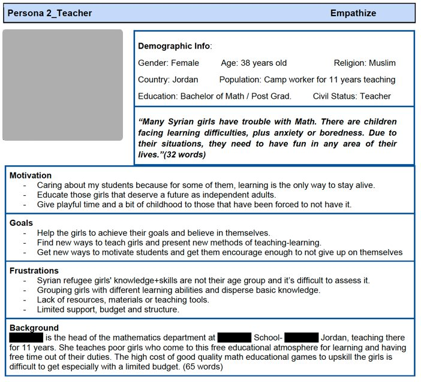
01 Stand Up Desk (A 2/9) — read the comments: the personas were fictional, with no research behind them, and AI-generated images replaced real observation of the user. Be warned about doing this!
3. Plan your research
The guide expects qualitative and quantitative research into the persona's needs, motivations, behaviours and experiences. Plan all three methods now:
- Interview (qualitative): write eight open questions about how, when and why they use the product and what frustrates them. Avoid questions that can be answered yes or no.
- Survey (quantitative): write six closed or rating-scale questions for ten or more people like your persona, so your claims have numbers behind them.
- Observation: decide when you will watch — and, with permission, photograph — the persona using the product.
- Permission: ask before photographing anyone, and keep personal details out of the report where they are not needed.
4. Draft the persona profile
Fill in what you know now, and mark what still needs evidence from your research.
| Aspect | What I know | Evidence / source |
|---|---|---|
| Demographics — age, education, occupation, family status, access challenges | ||
| Abilities and skills | ||
| Behaviour patterns and attitudes | ||
| Goals, concerns and needs | ||
| Physical, social and technological environment | ||
| Motivations and preferences | ||
| What they require from the product |
- ☐ The persona is a real person I can observe and photograph
- ☐ Every statement about them is backed by research evidence
- ☐ I explain why each characteristic matters for the redesign
- ☐ I have several images showing their issues with the existing product
5. Commencement task
Write the opening paragraph of your persona analysis (80–120 words): who the persona is and why their characteristics make the existing product difficult for them. Use at least one piece of evidence.
Task 3 — Task analysis and storyboard
Learning outcomes
- Break the persona's use of the product into a sequence of steps (a task analysis).
- Identify the difficulty at each step from real observation.
- Plan a storyboard that shows those issues visually, without extended writing.
- Turn the difficulties you find into opportunities for redesign.
1. What the criterion asks
The second strand of criterion A asks you to present a storyboard based on the observations of a primary persona using a product for a specific task. A task analysis is a way of building empathy: understanding how users perform a task to reach their goal.
| Marks | What the work does |
|---|---|
| 1–3 | a storyboard based on a limited task analysis |
| 4–6 | a satisfactory storyboard based on a task analysis |
| 7–9 | a detailed storyboard based on a comprehensive task analysis |
Required evidence: a storyboard for the chosen primary persona that highlights the issues of using the product. Extended writing should not be included. About three A4 pages.
2. Learn from the exemplars
- 08 Prosthetics (A 8/9) — how many frames are there, and how is each issue made visible?
- 01 Stand Up Desk (A 2/9) — the comments: AI-generated imagery was used instead of real observation of the user carrying out the task.
3. Task analysis
Watch the persona perform the task from start to finish (or recall it now and check it by observing later). Record every step.
| Step | What the persona does | Difficulty observed | Evidence (photo, quote, measurement) | Redesign opportunity |
|---|---|---|---|---|
| 1 | ||||
| 2 | ||||
| 3 | ||||
| 4 |
Be specific: "grip slips when hands are wet", not "hard to hold". Time the steps, and measure forces, reaches or distances where you can — numbers make the analysis comprehensive.
4. Plan the storyboard
A storyboard shows the stages of the persona completing the task, in order, with the challenges they meet. Plan six to nine frames: each is one photograph or sketch, a caption, and a clear marker on the problem.
- ☐ Every frame comes from an observed step, with real photographs where possible
- ☐ The issues are highlighted visually — circles, arrows, icons
- ☐ Captions and annotations only — no paragraphs, 10 words or fewer each
- ☐ It fits in about three A4 pages
5. Exit task
Choose the single most important difficulty from your task analysis and write two sentences: what happens, and what redesign opportunity it creates. It becomes the heart of your problem statement in the next step of your project.
Task 4 — Analysing existing products
Learning outcomes
- Select a range of four to six existing products relevant to your redesign.
- Test and analyse their form, function, materials, aesthetics, ergonomics, manufacture, environment and safety.
- Identify the successes and weaknesses of every key feature.
- Present the analysis as annotated images of product testing.
1. What the criterion asks
The third strand of criterion A asks you to analyse existing products and the successes and weaknesses of key features.
| Marks | What the work does |
|---|---|
| 1–3 | outlines a limited range of existing products and lists their key features |
| 4–6 | describes a range of existing products, with the successes and weaknesses of some key features |
| 7–9 | evaluates a range of existing products, accurately judging the successes and weaknesses of all key features |
Required evidence: annotated images of the product testing — a typical range is four to six products — in about four A4 pages. The guide suggests comparing: the success of the products' form and functionality; materials and components; aesthetics and ergonomic features; manufacturing and construction techniques; environmental and safety considerations.
2. Learn from the exemplars
- 08 Prosthetics (A 8/9) — notice that products are tested, not just described.
- 02 Water Carrier and 05 Easy On Pants (A 5/9) — which key features are judged, and which are only listed?
3. Choose the products and key features
Pick four to six products, including the one you are redesigning. List five to eight key features that matter to your persona — take them from the difficulties in your task analysis (Task 3).
4. Test and compare
Test, don't just look: time it, weigh it, measure it, try it with your persona, and photograph each test. Record a success (✓) or weakness (✗) with the reason.
| Key feature | Product 1 | Product 2 | Product 3 | Product 4 | Product 5 |
|---|---|---|---|---|---|
5. Self-check
- ☐ Four to six products are compared
- ☐ Every key feature is judged for every product
- ☐ Each judgement is backed by a test or observation
- ☐ Images show testing, not catalogue photographs
- ☐ Annotations are 10 words or fewer
6. Exit task
Write the conclusion to your product analysis (60–100 words): which features succeed, which fail, and what your redesign must therefore do better.
Video support
| Search phrase | Suggested channel | Use it for |
|---|---|---|
| product teardown | iFixit | Section 4 — looking inside a product |
| ergonomics in product design | preview first | Section 3 — choosing key features |
| competitive analysis product design | preview first | Section 4 — building the matrix |
Criterion B — Defining the project (6 marks)
About 4 pages and 1,200 words. Criterion B turns what you found in criterion A into a brief: a problem statement (Task 5) and a design specification (Task 6).
Task 5 — The problem statement
Learning outcomes
- Synthesize your qualitative and quantitative findings into one concise problem statement.
- Present the current situation, the current problem and the research that justifies it.
- Link the problem clearly to your task analysis and to opportunities for redesign.
- Refine the statement as new evidence arrives.
1. What the criterion asks
Criterion B: Defining the project is worth 6 marks (about 4 pages and 1,200 words). Its first strand asks you to produce a problem statement that identifies opportunities for the redesign of the product through the task analysis.
| Marks | What the work does |
|---|---|
| 1–2 | presents a problem statement with limited opportunities for the redesign; the links to the task analysis are superficial |
| 3–4 | describes a problem statement with some opportunities, informed by the task analysis |
| 5–6 | explains a problem statement with key opportunities, informed by the task analysis |
Required evidence: a problem statement which includes the current situation, the current problem and a summary of the research that shows the problem is the right one — in about one A4 page.
2. Draft the problem statement
Use this structure, one short paragraph each:
- Current situation — who the persona is, the product and the task, and the context.
- Current problem — the specific difficulties from your task analysis, with evidence.
- Why it matters — the impact on the persona, with numbers from your survey.
- Opportunity — what a redesign could change (do not design the solution yet).
Sentence starters: "Currently, [persona] uses [product] to [task]…" · "The task analysis showed that at [step], [difficulty], because…" · "Survey results show that [x of y] users…" · "This creates an opportunity to redesign [feature] so that…"
- ☐ Situation, problem and research summary are all present
- ☐ Every claim can be traced to evidence from Tasks 2–4
- ☐ It explains why, rather than just stating what
- ☐ It identifies opportunities, not a finished solution
- ☐ It fits in about one page
3. Learn from the exemplars
08 Prosthetics and 11 Trowel (B 5/6) — find the problem statement and mark the situation, the problem and the research. The moderator's comments on the Trowel's 5/6: the student pinpointed the areas for redesign through a suitable task analysis and set out the situation and the problem clearly, but showed too little research to prove the problem was the right one — more research would have given the redesign a firmer footing.

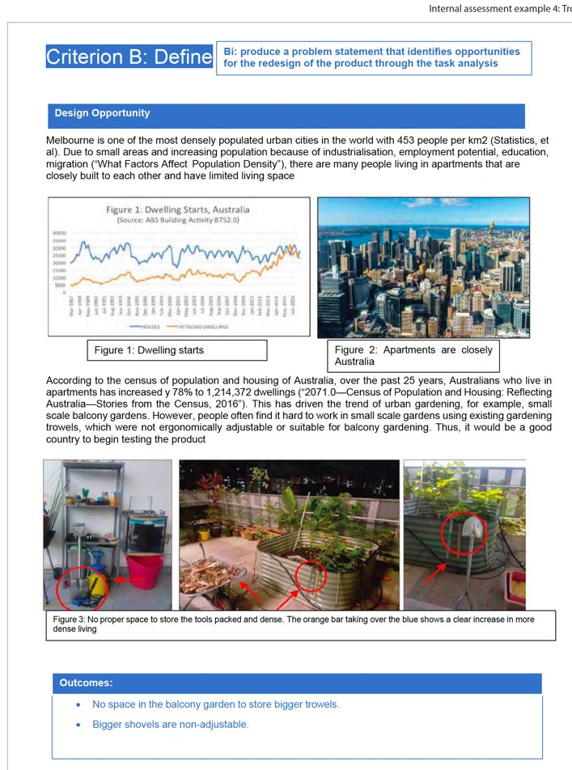

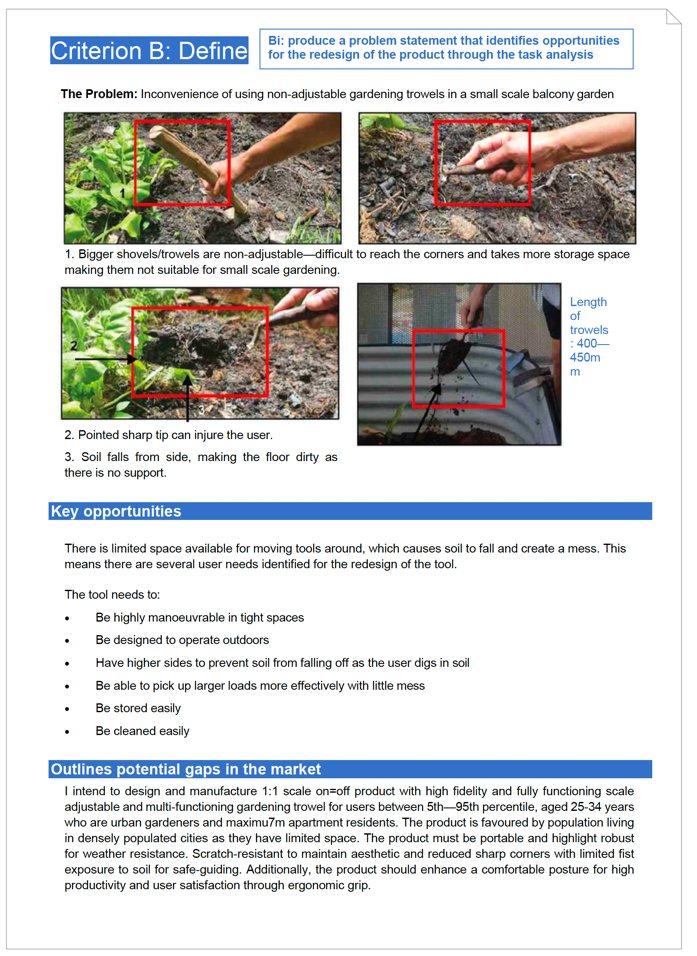

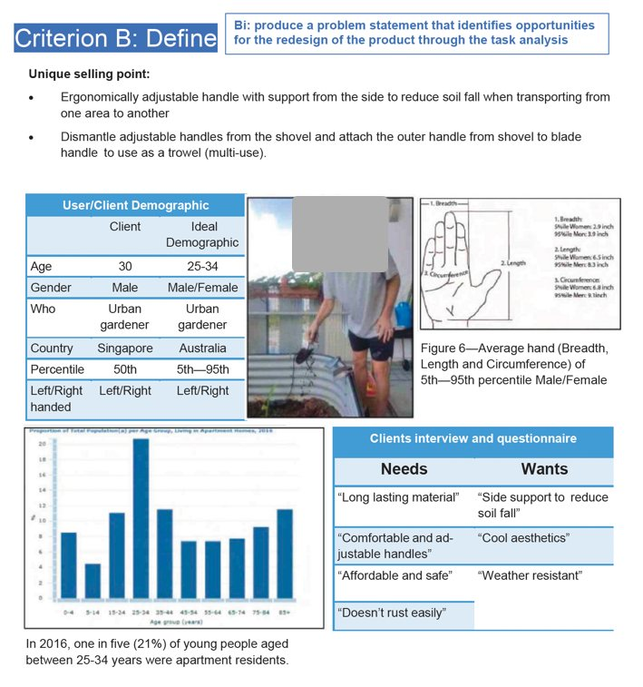
01 Stand Up Desk (B 3/6) — the comments: some opportunities are described with some primary and secondary research, but the links to the task analysis are superficial, there is little evidence of a real user, and testing and feedback are not shown.

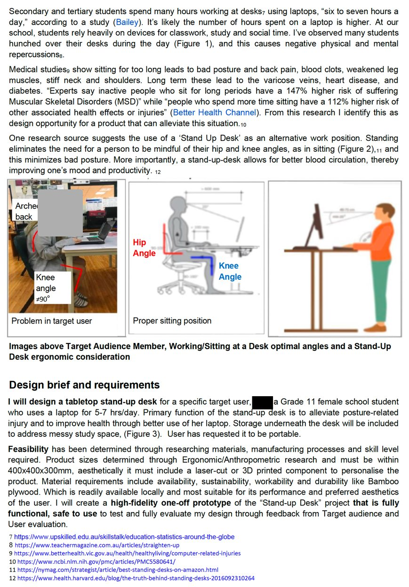
4. Synthesize
| Finding | Source (interview, survey, observation, product test) | What it tells me |
|---|---|---|
Task 6 — The design specification
Learning outcomes
- Turn research findings into essential and desirable requirements.
- Justify each requirement with a reference to your research, including UX from your product analysis.
- Cover every relevant aspect: attributes, components, constraints, environment, functions, user needs, safety, aesthetics, manufacture.
- Write requirements that you can test later.
1. What the criterion asks
The second strand of criterion B asks you to produce product design specifications with reference to research — including the UI and UX points that came out of your existing-product analysis in criterion A.
| Marks | What the work does |
|---|---|
| 1–2 | states the requirements, with limited reference to the research |
| 3–4 | outlines the requirements, with relevant reference to the research |
| 5–6 | explains the requirements, with relevant and detailed reference to the research |
Required evidence: a design specification that captures both essential and desirable requirements, so that the redesigned product meets the needs of the intended user — in about three A4 pages. The guide asks you to prioritise the essential and desirable requirements and to justify them with references to your sources.
2. How to plan and write your specification
A design specification is the success criteria for your product. It lists what the product must and should do to meet the user's needs and solve the problem.
Essential or desirable? Take an IA that redesigns the stabilisers on a child's bicycle. The essential parts of the bicycle are the frame, wheels, tyres, brakes, handlebars, seat, pedals, chain, sprockets and drivetrain, and fork. The desirable ones include a red frame, rubber handle grips, a padded seat, a lightweight frame, a bottle holder, a basket, mudguards, a bell, reflectors and a kickstand. Your specification makes the same split for the product you are redesigning.

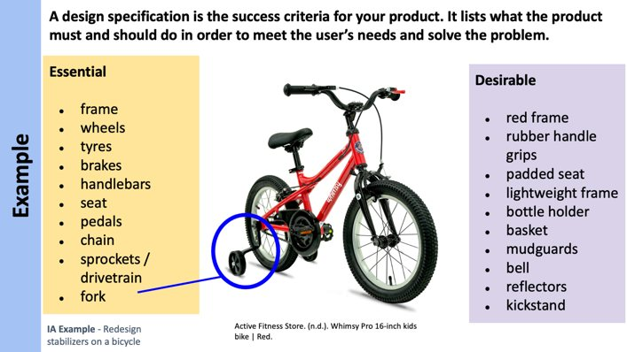
State, outline, explain — one requirement written three ways. The same specification point (attributes, essential) at each mark band:
| Band | Requirement | Justification |
|---|---|---|
| State (1–2) | 1.1 Lightweight (E) | So the bicycle is not heavy. |
| Outline (3–4) | 1.1 The product should be lightweight (E) | From the client interview (fig 1.1), the user said they do not want the bicycle to feel heavy or harder to control. This means the stabilisers should be lightweight. |
| Explain (5–6) | 1.1 The stabilisers should not add more than 2 kg to the bicycle (E) | From the client interview (fig 1.1), the user said they want the bicycle to stay easy to control and not feel noticeably heavier. The task analysis (fig 2.1) backed this up: balance and control were key user needs. The product analysis (fig 3.1) of similar stabilisers showed that lightweight supports work better, because extra mass makes the bicycle harder to steer and the rider less confident. Therefore the redesigned stabilisers should add no more than 2 kg to the bicycle. |
The explained version is measurable, it is marked essential, and every reason points to a piece of research.

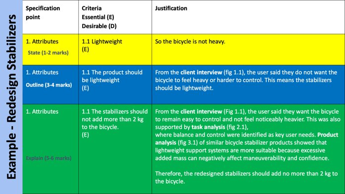
Question prompts for each specification point
| Spec point | Question prompts |
|---|---|
| Attributes | What qualities should the product have? Should it be lightweight, stable, discreet, adjustable, compact, durable, foldable, portable, water-resistant, or easy to clean? Which qualities came from the persona, storyboard, or product analysis? |
| Components | What individual parts or elements are needed? Does it need nuts/bolts, clips, hinges, handles, supports, rails, grips, brackets, holders, pads, pivots, or fasteners? Which components in existing products worked well or poorly? |
| Constraints | What limits the design? Think about budget, space, size limits, user strength, surrounding furniture/environment, available tools, materials, workshop processes, time, or installation restrictions. |
| Environment | Where will the product be used? Indoors, outdoors, wet, humid, dusty, hot, bathroom, bedroom, desk, car, workshop? How should that affect the design? |
| Functions | What must the product do? What is its main function? Are there any secondary functions? What must it do better than the current product? |
| User needs | What does the user specifically need from the product? What must improve in terms of comfort, speed, convenience, support, access, or usability? What came directly from the interview, storyboard, or task analysis? |
| Safety | What hazards must be avoided? Could the user slip, strain, cut themselves, burn themselves, trap fingers, lose balance, or damage property? |
| Aesthetics | What should it look like? Consider colour, shape, finish, texture, style, and whether it should be discreet, modern, minimal, sporty, or neutral. |
| Manufacture requirements | How could the product realistically be made? What materials and processes are suitable? Does it need to be 3D printed, laser cut, bent, moulded, sewn, assembled, or batch produced? |
| Ergonomics / anthropometrics | What posture, grip, reach, clearance, work envelope, or body measurements matter? Does it need to suit a percentile range or be adjustable? |
| Size / dimensions | What exact dimensions must it fit within? What surrounding measurements matter, such as desk, armrest, shelf, bed, bag, or wall space? |
| Weight | How heavy can it be before it becomes inconvenient or uncomfortable? Did the user mention a weight preference or limit? |
| Materials | What properties are needed? Consider strength, stiffness, softness, grip, corrosion resistance, water resistance, flammability, hygiene, and durability. |
| Stability | Must the product resist slipping, tipping, bending, wobbling, or shifting? What evidence showed this was important? |
| Durability / maintenance | How long should it last? Does it need to survive repeated use, moisture, impact, or cleaning? Should it be easy to maintain or repair? |
| Sustainability | Can the design reduce waste, use fewer materials, be repaired, be disassembled, or use recyclable/reusable materials? |
| Cost / value | Is there a target price? Would the user accept a higher cost for better quality, safety, or comfort? |
| UX | What should the experience of using the product be like from start to finish? Should it be quick, intuitive, low effort, comfortable, and easy to set up or store? |
3. Learn from the exemplars
11 Trowel (B 5/6) — how is each requirement justified?

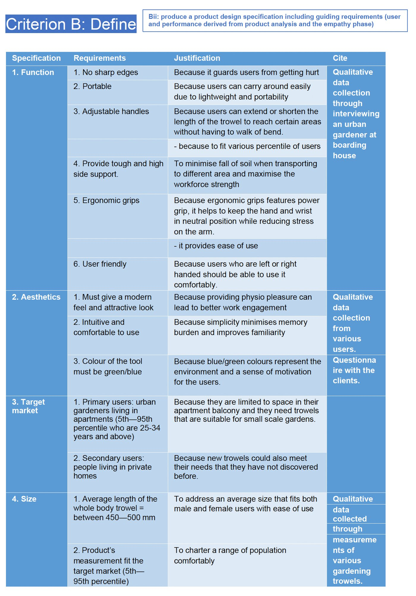

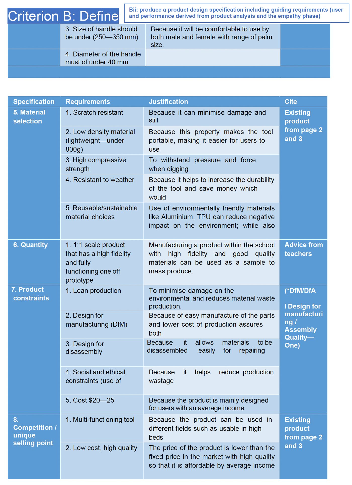
01 Stand Up Desk (B 3/6) — the comments: essential and desirable requirements were not distinguished, and missing evidence made the justifications weak.

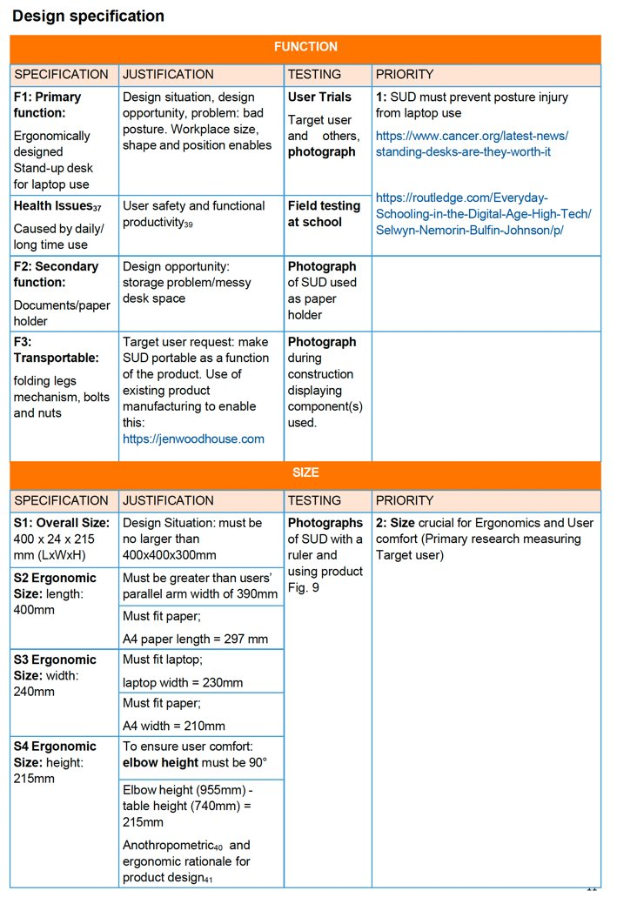

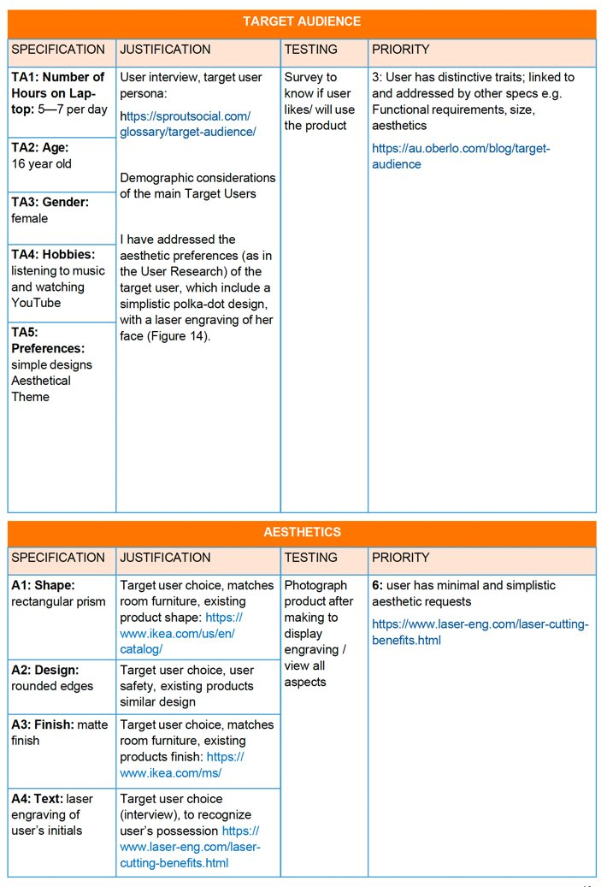

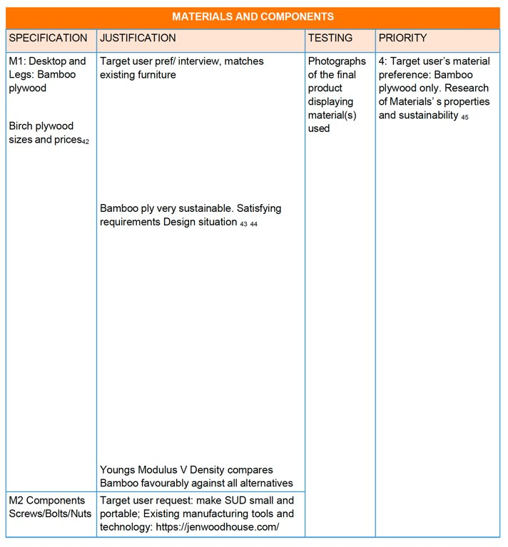

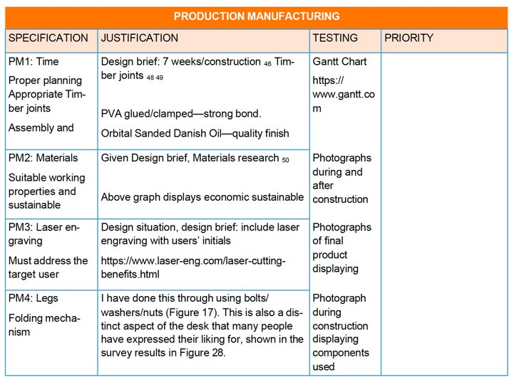
4. Build the specification table
| Aspect | Requirement (measurable) | Essential or desirable | Justification — research reference | How it will be tested |
|---|---|---|---|---|
| Attributes | ||||
| Components | ||||
| Constraints | ||||
| Environment | ||||
| Functions | ||||
| User needs | ||||
| Safety | ||||
| Aesthetics | ||||
| Manufacture requirements |
- Make it measurable: "handle diameter 30–40 mm", not "comfortable".
- Reference your own research — "(interview, question 3)", "(survey Q4: 70% of users)", "(product test 2)" — and footnote secondary sources such as anthropometric data.
- Include the UX points that came out of your product analysis in Task 4.
5. Self-check
- ☐ Every requirement is measurable
- ☐ Each is marked essential or desirable
- ☐ Each is justified by research
- ☐ Each has a test you will run in criteria C and D
- ☐ UX from the product analysis is included
6. Exit task
Pick your three most important essential requirements and write one sentence for each explaining why the persona needs it.
Video support
| Search phrase | Suggested channel | Use it for |
|---|---|---|
| product design specification | preview first | Section 3 — what a specification contains |
| MoSCoW prioritisation | preview first | Section 3 — essential versus desirable |
| anthropometric data in design | preview first | Section 3 — measurable user needs |
Criterion C — Ideation and modelling (6 marks)
About 8 pages and 900 words. Criterion C asks you to present feasible redesign ideas (Task 7) and evaluate them against your specification through testing and user feedback (Task 8).
| Marks | What the work does |
|---|---|
| 1–2 | fewer than three annotated, feasible ideas with limited key features · states the differences between the ideas against the specification |
| 3–4 | the three best annotated, feasible ideas, covering some key features · describes the differences between them against the specification |
| 5–6 | the three best annotated, feasible ideas, covering all key features · evaluates the ideas against the specification through testing and user feedback |
Task 7 — Generating feasible redesign ideas
Learning outcomes
- Generate a range of feasible redesign ideas that address your problem statement.
- Communicate ideas with sketches, drawings, CAD, images and fidelity models.
- Annotate concisely — 10 words or fewer per annotation.
- Show how research and user feedback drive the development of each idea.
1. What the criterion asks
The first strand of criterion C asks you to present a range of annotated, feasible redesign ideas, in an appropriate medium, that address the problem statement and can be interpreted by others.
Required evidence: a range of feasible ideas communicated using sketches, drawings, CAD, images and fidelity models (one to two A4 pages per idea); the additional research and/or feedback that drives the iterative development of the ideas, highlighted; annotations — in about six A4 pages.
2. Learn from the exemplars
08 Prosthetics (C 6/6) — how are the three ideas developed with models and feedback? The moderator's comments: five ideas were presented, each annotated with strengths, weaknesses and user feedback and supported by physical models and user testing; each idea was scored against the specification point by point; and the ideas were narrowed to the three most convincing, with justified annotations, before one was chosen for criterion D.

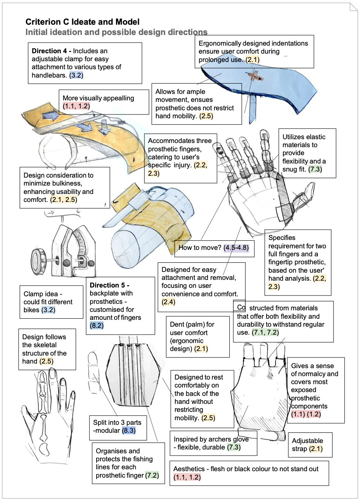
3. Rapid ideation
Sketch ten quick thumbnail ideas, each tackling a different opportunity from your problem statement. Do not judge them yet.
4. Develop your three best ideas
Choose the three ideas that best meet your essential requirements. Give each its own page: a clear sketch or CAD view, a quick low-fidelity model (card, foam, clay) and a note of the research or feedback that changed it.
| Idea | Key features addressed | Specification points met | Model made | Feedback received |
|---|---|---|---|---|
| 1 | ||||
| 2 | ||||
| 3 |
5. Annotation practice
"This handle has been made thicker so that people with arthritis can grip it more easily" is 17 words — it counts as description. "Thicker 35 mm handle eases arthritic grip" is 7. Rewrite three of your own annotations to 10 words or fewer.
- ☐ Three best ideas, one to two pages each
- ☐ Every key feature is covered
- ☐ Models are shown, not only sketches
- ☐ Annotations are 10 words or fewer
- ☐ Feedback visibly drives changes
6. Exit task
For each of your three ideas, write one sentence: which opportunity from your problem statement it tackles, and how.
Video support
| Search phrase | Suggested channel | Use it for |
|---|---|---|
| product design sketching for beginners | industrial design channels — preview first | Sections 3 and 4 |
| low fidelity prototyping | IDEO U, Stanford d.school | Section 4 — quick models |
| how to annotate design sketches | preview first | Section 5 |
Task 8 — Testing and evaluating ideas
Learning outcomes
- Test each redesign idea against the design specification.
- Gather and use feedback from the intended user.
- Evaluate strengths and weaknesses to select the most suitable idea.
- Present an annotated presentation drawing of the selected idea.
1. What the criterion asks
The second strand of criterion C asks you to evaluate the redesign ideas against the design specifications through testing and user feedback — the top band evaluates; lower bands only describe or state the differences.
Required evidence: an annotated presentation drawing of the feasible redesign idea, tested against the design specifications and user feedback — about two A4 pages. The chosen idea should be checked against both the performance requirements and the user's requirements.
2. Learn from the exemplars
08 Prosthetics (C 6/6) — how is the chosen idea justified? Every idea was reviewed against the performance requirements, the user's requirements and the feedback, for all of the specification points, and a clear summary named the idea taken forward to criterion D.

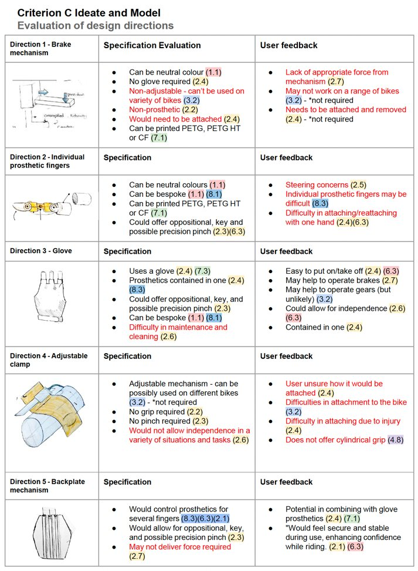

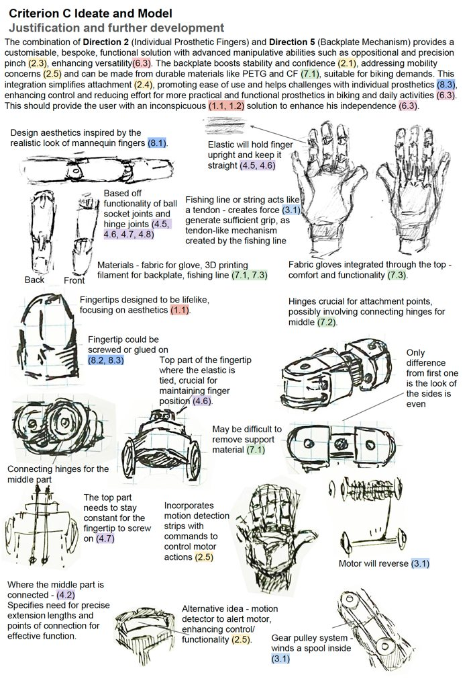
3. Plan the tests and the feedback
For every essential requirement, decide how you will test it on your models. Plan how your persona will try each idea, and the three questions you will ask them afterwards.
4. Evaluation matrix
Score each idea 0–3 against each specification point, with the evidence that justifies the score.
| Specification point | Idea 1 | Idea 2 | Idea 3 | Evidence (test result, user feedback) |
|---|---|---|---|---|
5. Choose and justify
Pick the idea that best meets the essential requirements and the user feedback. Note what you will carry into development, including any features worth borrowing from the other ideas.
- ☐ Every idea was tested against the same specification points
- ☐ Real user feedback is quoted
- ☐ Strengths and weaknesses are both weighed
- ☐ The choice is justified by evidence
- ☐ The presentation drawing is annotated (10 words or fewer each)
6. Exit task
In 80–120 words, justify your chosen idea using at least two test results and one quotation from your user.
Video support
| Search phrase | Suggested channel | Use it for |
|---|---|---|
| usability testing 101 | NNgroup | Section 3 — testing with users |
| decision matrix | preview first | Section 4 — scoring ideas |
| Pugh matrix | preview first | Section 4 — an alternative method |
Criterion D — Designing a solution (6 marks)
About 10 pages but only about 300 words — criterion D is mostly visual. It asks you to develop your chosen idea through iterative fidelity models (Task 9) and to produce design drawings a manufacturer could work from (Task 10).
Task 9 — Iterative fidelity modelling and testing
Learning outcomes
- Plan model–test–refine cycles for your chosen idea.
- Choose the right fidelity for each question you need to answer.
- Test against all the specification points and the persona's needs.
- Record each cycle with annotated images and short conclusions.
1. What the criterion asks
The first strand of criterion D asks you to develop and annotate iterative fidelity models through multiple testing and refinement cycles, to arrive at the redesigned solution that addresses the problem statement, the design specifications and the needs of the intended user.
| Marks | What the work does |
|---|---|
| 1–2 | a fidelity model that partially addresses the problem statement, with limited testing against the specification and the user's needs |
| 3–4 | a fidelity model that satisfactorily addresses the problem statement, and outlines the testing against the specification and the user's needs |
| 5–6 | a fidelity model that thoroughly addresses the problem statement, and evaluates the testing against all of the specification and the user's needs |
Required evidence: annotated drawings — informal or formal design drawings or sketches, photographs of physical models, or CAD — of the repeated testing and refinement with the intended user, matched to the requirements in your specification, in about six A4 pages. Low-fidelity models are proof of concept and may test only one or two aspects; high-fidelity models can be tested against several specifications, with end-user feedback.
2. Learn from the exemplars
- 08 Prosthetics, 07 Capsule Toy and 11 Trowel (D 6/6) — count the cycles. What changed each time, and why?
- 09 Disability Desk (D 3/6) — read the comments: what limited the testing?
3. Plan the cycles
| Cycle | Fidelity and material | Question it answers | Specification points tested | Who tests it |
|---|---|---|---|---|
| 1 | ||||
| 2 | ||||
| 3 | ||||
| 4 |
4. Test log for cycle 1
| Specification point | Test method | Result (measured) | User feedback | Change for the next cycle |
|---|---|---|---|---|
5. Self-check
- ☐ At least three cycles are planned
- ☐ Every specification point is tested by the end
- ☐ Each change is traced to a test result or feedback
- ☐ Every model and test is photographed
- ☐ Annotations are 10 words or fewer; prose stays within about 300 words for the whole of criterion D
6. Exit task
Plan the page for cycle 1: which photographs you will use, and four to six annotations of 10 words or fewer.
Video support
| Search phrase | Suggested channel | Use it for |
|---|---|---|
| prototyping design thinking | IDEO U, Stanford d.school | Section 3 — why iterate |
| rapid prototyping techniques | preview first | Section 3 — materials and methods |
| paper prototyping user testing | NNgroup | Section 4 — getting feedback on a model |
Task 10 — Design drawings for a manufacturer
Learning outcomes
- Produce formal assembled, exploded and orthographic drawings of your final solution.
- Dimension the drawings so that a third-party manufacturer could make the product.
- Identify components, materials and assembly clearly.
- Annotate the drawings concisely.
1. What the criterion asks
The second strand of criterion D asks you to design drawings of the intended solution and its components that aid communication and visualization to a third-party manufacturer.
| Marks | What the drawings show |
|---|---|
| 1–2 | limited detail of the solution and its components |
| 3–4 | adequate detail of the solution and its components |
| 5–6 | comprehensive detail of the solution and its components |
Required evidence: formal design drawings of the completed redesigned solution, and a range of formal assembled, exploded and orthographic annotated drawings — including dimensions, proportions and the assembly of the solution and its components. About one to two images per page, in about four A4 pages. These detailed dimension drawings are the one place the project may use landscape pages.
2. Learn from the exemplars
- 07 Capsule Toy and 11 Trowel (D 6/6) — which views are included, and how are they dimensioned?
- 08 Prosthetics (D 6/6) — an exploded assembly drawing and a dimensioned pattern, both made for someone else to build from.

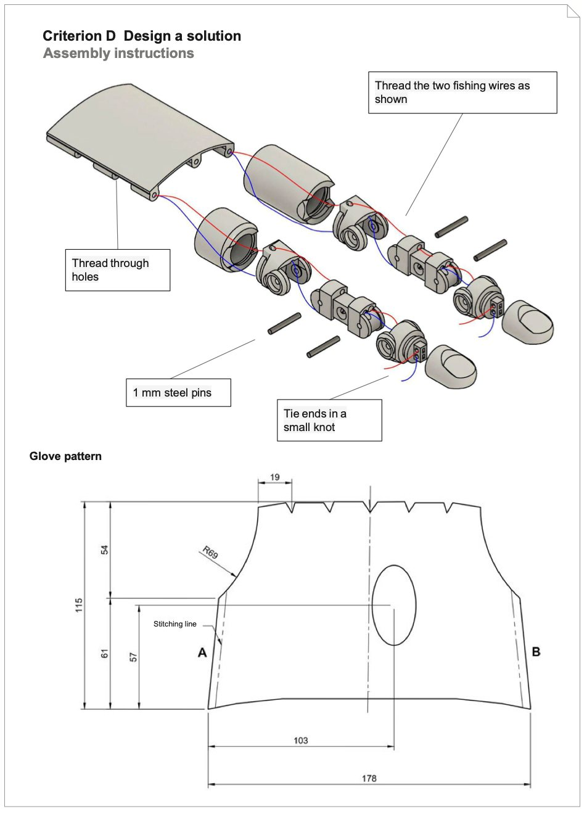
3. What the manufacturer needs
| Drawing | Shows | Done? |
|---|---|---|
| Assembled view | The complete product | |
| Exploded view with parts list | Every component and how it fits | |
| Orthographic views (front, side, plan) | Dimensions in mm, proportions | |
| Component details | Critical features, fixings, tolerances | |
| Materials and finishes | Callouts on the drawings |
4. Produce your first formal drawing
Draw the orthographic views first — in CAD (Fusion, Onshape, SolidWorks) or by hand to scale. Dimension the overall sizes, key features and fixings in millimetres, and add a title block: name, scale, units and the third-angle projection symbol.
- ☐ Assembled, exploded and orthographic views are all planned
- ☐ Dimensions are in mm, with proportions shown
- ☐ Every component is identified
- ☐ One to two images per page
- ☐ Someone else could make the product from these drawings
5. Exit task
Imagine you are the manufacturer. List three questions you would still need to ask after seeing the drawing — then add whatever answers them.
Video support
| Search phrase | Suggested channel | Use it for |
|---|---|---|
| third angle orthographic projection tutorial | preview first | Section 4 — laying out the views |
| exploded view drawing Fusion 360 | Product Design Online, Autodesk Fusion | Sections 3 and 4 |
| technical drawing dimensioning basics | preview first | Section 4 |
Criterion E — Presenting a solution (6 marks)
About 4 pages and only about 200 words. Criterion E asks you to present the redesigned solution with its key features annotated, and to show how it compares with the existing product and solves the problems you identified (Task 11).
Task 11 — Presenting the solution and comparing it with the original
Learning outcomes
- Present the redesigned solution to a third-party manufacturer with its key features annotated.
- Choose visual methods that show the product clearly: perspective, exploded, cutaway, renders.
- Compare the solution with the existing product you started from.
- Show how the redesign addresses the problems identified for the persona.
1. What the criterion asks
Criterion E: Presenting a solution is worth 6 marks (about 4 pages and only about 200 words). It asks you to present the intended redesigned solution and annotate its key features, and to present how using the redesigned solution compares with the existing product and how it addresses the problems you identified.
| Marks | What the work does |
|---|---|
| 1–2 | limited annotation of the key features · simply sets the redesign beside the existing product |
| 3–4 | adequate annotation of the key features · compares with the existing product and addresses some of the problems |
| 5–6 | comprehensive annotation of the key features · compares with the existing product and comprehensively addresses the problems |
Required evidence: the redesigned product with its key features annotated (about two to three images per page, two A4 pages), and a description of how your solution compares with the original product you set out to redesign (two A4 pages). The presentation itself — its style and medium — is not assessed.
2. Learn from the exemplars
- 05 Easy On Pants and 08 Prosthetics (E 5/6) — how are the key features annotated, and how is the comparison made?
- 12 Drone Racing Tool and 10 Math Playset (E 2/6) — read the comments: what was missing?
3. Plan the presentation pages
List the key features to annotate — for example aesthetics, form, function, dimensions, components, materials, manufacturing processes and user experience — and choose the views that show them best: a perspective render, an exploded view, a cutaway, a photograph of the model in use.
4. Compare with the original
| Problem identified (Tasks 3 and 5) | Existing product | Redesigned solution | Evidence that it works (test, feedback) |
|---|---|---|---|
Then add: how the persona will use the solution, and why it suits them better than the product they started with.
- ☐ Every key feature is annotated (10 words or fewer each)
- ☐ Two to three images per page
- ☐ Every identified problem is answered
- ☐ Claims are backed by test results or user feedback
- ☐ It fits in about four pages and 200 words
5. Exit task
Write your closing paragraph (100 words or fewer): the single biggest improvement for your persona, with the evidence that proves it.
Video support
| Search phrase | Suggested channel | Use it for |
|---|---|---|
| Fusion 360 rendering tutorial | Product Design Online | Section 3 — presentation views |
| product design presentation board | preview first | Section 3 — page layout |
| product redesign case study before and after | preview first | Section 4 — making the comparison |
Final check
Before your one draft goes to your teacher, check it against every limit and assess it against every criterion (Task 12).
Task 12 — Final check: limits, integrity and self-assessment
Learning outcomes
- Check the project against the page, word and annotation limits.
- Confirm every source is footnoted and the work is authentically your own.
- Self-assess each criterion using the best-fit approach.
- Prepare your one draft for your teacher's feedback.
1. Audit the limits
| Check | Limit | Mine |
|---|---|---|
| Pages (A4 portrait, body only) | 35 | |
| Words (excluding annotations and footnotes) | 3,500 | |
| Longest annotation | 10 words | |
| Criterion A — pages / words | ≈ 9 / 900 | |
| Criterion B — pages / words | ≈ 4 / 1,200 | |
| Criterion C — pages / words | ≈ 8 / 900 | |
| Criterion D — pages / words | ≈ 10 / 300 | |
| Criterion E — pages / words | ≈ 4 / 200 |
- Nothing beyond 35 pages or 3,500 words is read.
- Remove any front cover, contents page or appendix — examiners do not read them. Move anything important into the body.
2. Referencing and academic integrity
- Every image, piece of data and idea from someone else is footnoted on the page where it appears.
- Photographs of your persona are your own and taken with permission — AI-generated images of "users" are not evidence.
- Interviews and user feedback are expected; the writing, decisions and drawings are yours.
- You will confirm that the work is authentic when you submit it — the final version cannot be withdrawn afterwards.
3. Self-assess criteria A to E
For each criterion, read the level descriptors from the bottom up and choose the one that fits your work best. It is not necessary for every part of a descriptor to be met — this is the IB's best-fit approach, and it is how your teacher will mark it.
| Criterion | Level that fits best | Evidence (page numbers) | What would move it up a level |
|---|---|---|---|
| A: Empathize (9) | |||
| B: Defining the project (6) | |||
| C: Ideation and modelling (6) | |||
| D: Designing a solution (6) | |||
| E: Presenting a solution (6) |
4. Questions for your teacher
Your teacher reads one draft and gives advice without editing it. Write three specific questions to hand in with it — for example: "Is my persona explained, or only described?" or "Does my specification refer to enough research?"
5. Exit task
List the three biggest improvements for your final version, with page numbers, and the date by which you will make them.
Video support
| Search phrase | Suggested channel | Use it for |
|---|---|---|
| academic integrity IB | preview first | Section 2 |
| how to insert footnotes in Word | preview first | Section 2 — referencing on the page |
| word count excluding footnotes Word | preview first | Section 1 — checking the limit |
Credits
With thanks to the creators of the videos on this page:
- IBDT: A2 - Presents a Storyboard — Mr Gaughan (YouTube)
- IBDT: A3 - Existing Products — Mr Gaughan (YouTube)
- IBDT: B1 - Produce a Problem Statement — Mr Gaughan (YouTube)
- IBDT: B2 Specification — Mr Gaughan (YouTube)
- IBDT: Criterion C — Mr Gaughan (YouTube)
- IBDT Criterion D — Mr Gaughan (YouTube)
The exemplar project pages are courtesy of the IBO (International Baccalaureate Organization). The faces and names of the people in them have been blanked out.